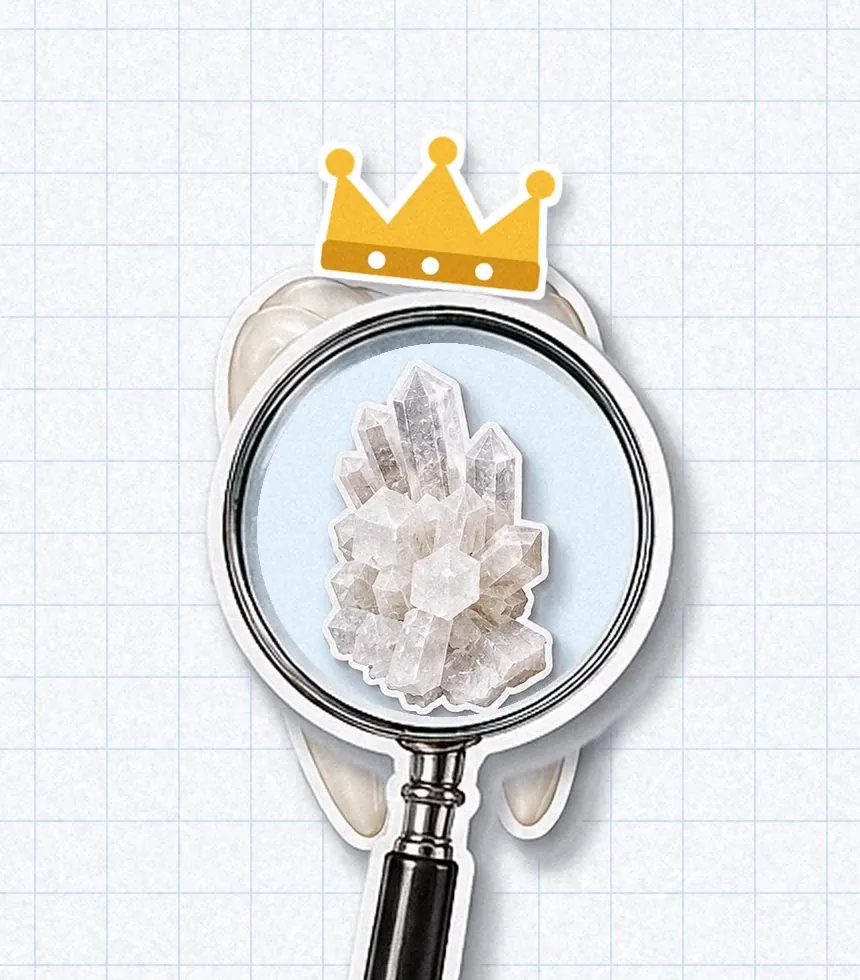
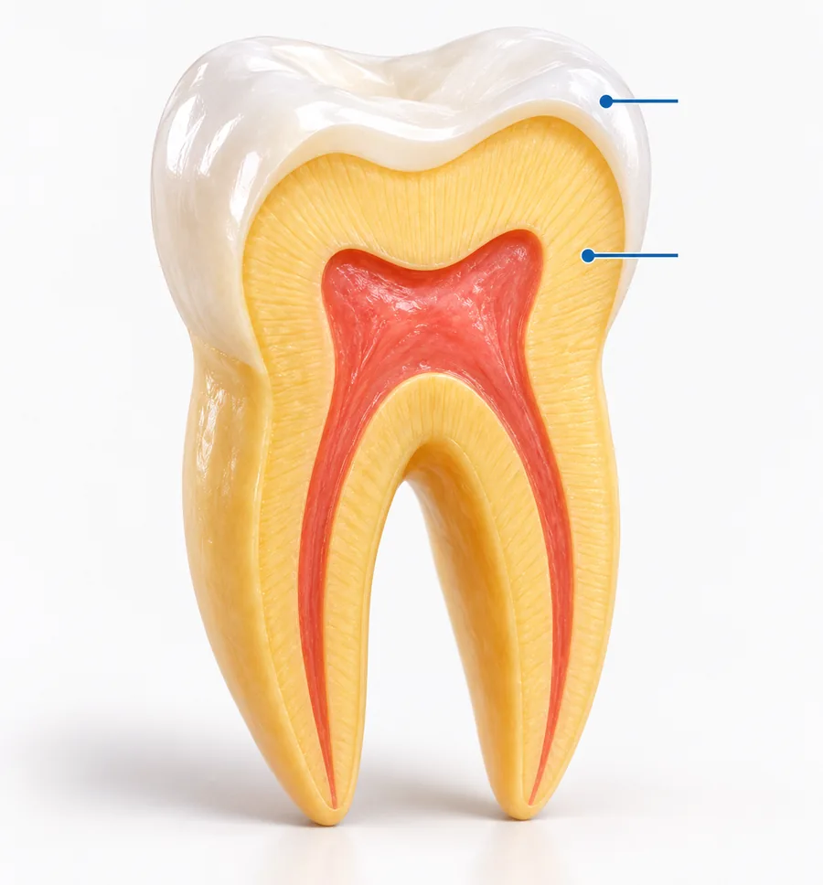
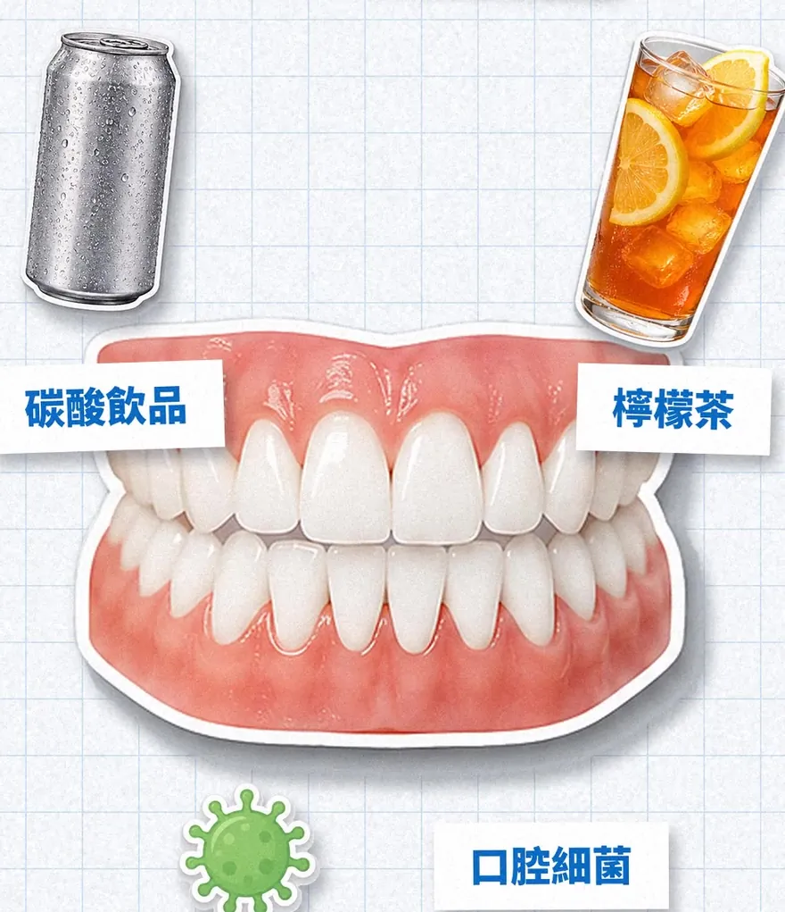
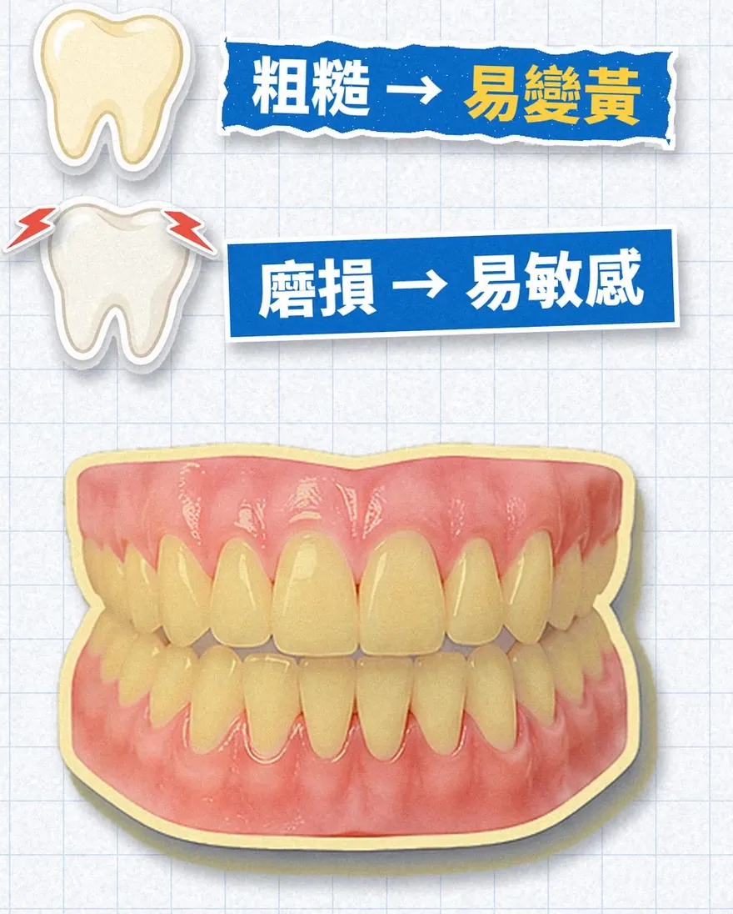
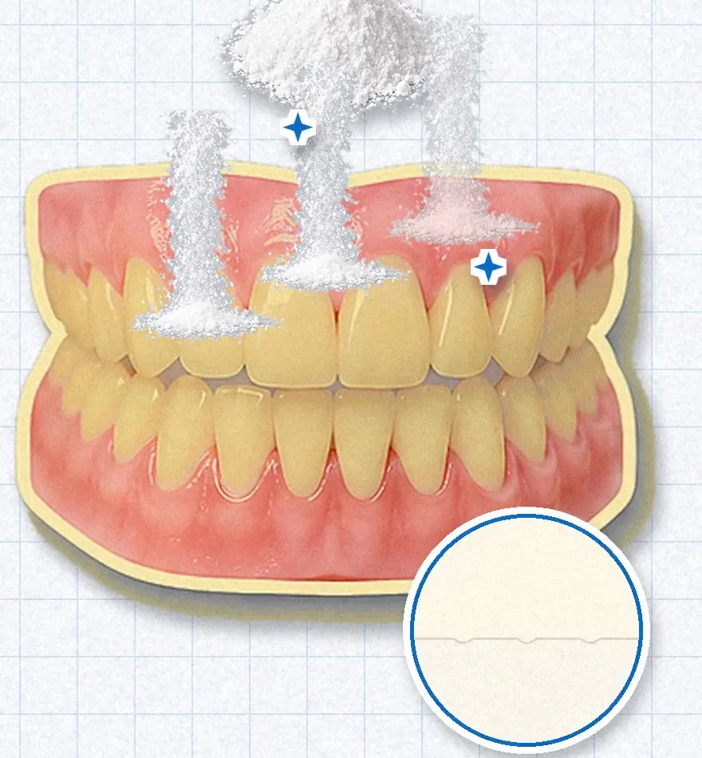

HAP 牙膏有用嗎？從琺瑯質結構了解羥基磷灰石的作用
羥基磷灰石（Hydroxyapatite，簡稱 HAP）是一種由鈣和磷組成的礦物晶體，也是牙齒琺瑯質的主要成分；成熟琺瑯質約 95% 至 96%（按重量計）為礦物質[1][2]。
日常飲食中的酸會令琺瑯質的礦物質流失，這個過程稱為「脫礦」[4]。牙膏中的 HAP 是一種成分與琺瑯質晶體高度相似的仿生微粒[5]；文獻回顧指出，HAP 可沉積於脫礦的琺瑯質表面，有助牙面再礦化[9]。
HAP 牙膏的主要作用HAP 的作用集中於牙齒表面，並不能令已流失的琺瑯質重新生長[3]；預防蛀牙方面，則以含氟牙膏的研究證據最為充分[7]。

人體最堅硬的組織：琺瑯質
牙齒由外至內大致可分為琺瑯質、牙本質（又稱象牙質）和牙髓。琺瑯質覆蓋在牙冠表面，是人體最堅硬的組織，比骨骼還要堅硬。成熟的琺瑯質約 95% 至 96%（按重量計）是礦物質，其餘是水分和極少量有機物[1][2]。
這些礦物質主要以「羥基磷灰石」（Hydroxyapatite，簡稱 HAP）的形式存在，是一種由鈣和磷組成的晶體[2]。琺瑯質雖然堅硬，卻沒有活細胞，一旦流失便不會重新長回[3]。因此，日常保護好牙齒表面特別重要。

琺瑯質 牙本質琺瑯質為何會流失？
琺瑯質流失的成因有很多，主要可分為化學性的酸性侵蝕，以及物理性的磨損兩類[8][13]；另外，部分身體狀況亦會令情況加劇。
酸性侵蝕
當口腔的酸鹼值（pH）降至約 5.5 以下，琺瑯質表面的礦物質便會開始溶出，這個過程稱為「脫礦」[4][9]。常見的例子包括：
- 汽水等碳酸飲品，當中常含磷酸、檸檬酸[10]
- 檸檬茶、果汁等含果酸的飲品
- 口腔細菌分解食物中的糖分後產生的酸

物理性磨損
- 刷牙過度用力，或使用硬毛牙刷
- 磨牙
- 日常咀嚼造成的自然磨耗
口乾與唾液不足
唾液能中和口腔中的酸，並幫助沖走食物殘渣[11]。患有口乾症（唾液分泌不足）的人，口腔沒有足夠的唾液去中和酸性，琺瑯質便更容易流失；某些藥物（例如長期服用抗組織胺藥）亦可能減少唾液分泌[8]。
胃酸倒流
有胃酸倒流問題的人，胃酸有機會湧上口腔。胃酸的 pH 值約為 1 至 2，遠低於琺瑯質開始脫礦的 5.5[12]，對琺瑯質的侵蝕作用非常強烈。睡眠期間唾液分泌減少，影響會更明顯[11]。
牙面變粗糙，會帶來甚麼影響？
礦物質流失和日常磨損，會令牙齒表面出現肉眼看不見的微細孔洞和刮痕。牙面一旦變得粗糙，主要會帶來兩個影響：
1. 牙齒較易變黃、看起來暗啞
光線照在平滑的表面會整齊反射，看起來有光澤；照在粗糙的表面則會向不同方向散射，牙齒看起來便較暗啞。同時，咖啡、茶等飲品的色素，亦較容易積聚在凹凸不平的表面。
此外，琺瑯質本身呈半透明。當它因侵蝕或磨損而變薄，下層顏色較黃的牙本質便更容易透出，牙齒看起來會偏黃[8]。
2. 牙齒較易敏感
琺瑯質磨損變薄後，下層的牙本質較容易受外界刺激影響。進食冷飲或酸甜食物時，牙齒可能會感到痠軟不適[3]。

HAP 牙膏如何發揮作用？
既然琺瑯質本身主要由 HAP 組成，HAP 牙膏的思路就是用成分接近的材料去護理牙面。牙膏中的 HAP 是一種仿天然礦物微粒，成分與琺瑯質的晶體高度相似，因此被歸類為「仿生」（biomimetic）成分[5]。刷牙時，這些微粒可以附著在牙齒表面，幫助填補微細孔洞和刮痕。

牙面變得平滑後：
- 光線能更整齊地反射，牙齒自然更有光澤
- 表面較少凹凸位，色素較難依附
- 有助舒緩牙齒敏感帶來的痠軟不適
在牙齒敏感方面，已有多項系統性回顧研究指出，含 HAP 的口腔護理產品有助減輕牙本質敏感的不適[5][6]。
象牙質內有許多微細小管。當象牙質外露，冷或酸甜的刺激便較容易經這些小管引起痠軟。研究發現，HAP 可阻塞這些外露的小管，這亦是它有助舒緩敏感的原因之一[5]。
影片：40 秒看懂 HAP
貝潔得 HAP 升級雙效牙膏
貝潔得 HAP 升級雙效系列同時含有 HAP 和氟化物：HAP 幫助填補牙齒表面的微細孔洞，氟化物幫助預防蛀牙。由 1945 年創立的西班牙原廠製造。